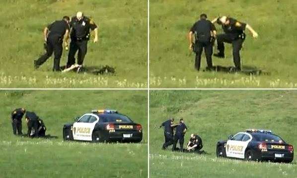
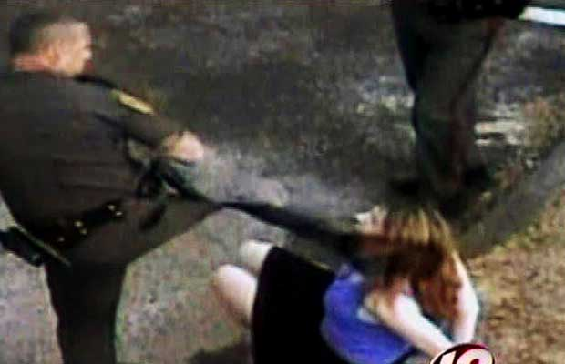

2014-10-19 18:43:00
最近我写了一些美国媒体扭曲事实、操弄民意的实例（参见前文《从乌克兰看今日美俄的政略与戦略》和《美元的金融霸权（四）》），没有长住美国的读者大概会觉得不可思夷。其实连很多长住美国的人都大吃一惊。不过其实像美国这様大规模的民主政体，如果不针对平民大眾用力洗脑，再加上超级强势的警察来压制社会运动，早就闹得天翻地覆了。有趣的是，媒体控制和强势警察的交集，刚好是一面很好的照妖镜，让我们来看看背后的事实真相是什么。
住过美国的人都知道，这里的警察叫你做什么，你最好低头乖乖听命，否则他在执勤过程中一枪打死你，是一点责任也没有的。像台湾的泼妇在被开罚单时，抓伤警察这种事，在美国是不能想像的；就算那个警察涵养深厚，前一晚上睡得很好，你企图袭警之后被一顿痛揍是免不了的，一般美国老百姓也只觉得你活该。每隔几天，地方新闻总是有警察撃毙歹徒的消息，所以大家都知道警察杀人是平常事，可是有谁知道每年有多少美国人被警察枪杀死亡吗？我在台湾时是从没听说的；在美国住了半辈子，什么莫名其妙的统计数字都看过，就是从没看到这个很重要、与日常生活很相关的统计数据。直到上个礼拜，看了这个有线电台的深夜节目（http://thedailyshow.cc.com/videos/v4l2pe/a-shot-in-the-dark），才恍然大悟：原来美国各级政府和大眾媒体，在过去几十年来，确实是有意而且是用心地遮掩这个事实。
这个事件发生在康乃狄克（Connecticut）州。嫌犯跑得太快了，害胖警察追得很累，不过只被跩了两脚，算是运气好的。大家（警察和嫌犯）都没事。

这个事件发生在罗德岛（Rhode Island）州，这个警察大概练过跆拳道，那个女人据称被当场踢昏。虽然被录了下来，在电视新闻上播了，这个警察既没有被关，也没有被开除；他是自己辞职的，还可以领津贴。大部分美国人认为警察使用暴力甚至枪械，是很平常的也很应该的。但是这是因为美国政府和媒体向来都努力对百姓洗脑。
为了不讲英文的读者的方便，我在这里简述一下那个节目里的记者所发现的事实：首先是各级政府提供了数以百万计的数据，但是就是从来不包括警察杀人的统计数字。其次是民间的统计专家也都知道这个数字是被藏起来的。退休的警察局长说他只知道自己局里的数据，上报给联邦政府以后就从人间蒸发了。我在前文《中共的下一个產业技术攻关：晶片》里曾提到，英美的文化里有民眾自我组织的传统。所以政府要掩藏事实，很自然地有公民自行组织起来，自己做这个统计；可是各级警察单位当然不会跟你合作。他们辛苦了几年，只完成了内华达（Nevada）州的统计工作，结果是所有的杀人致死（Homicide）之中，有8.7%是警察在执勤过程中干的。
内华达的警察在美国并没有恶名昭彰，那个公民组织挑上内华达纯粹是因为发起人就住那儿，所以8.7%这个比率应该是适用于全国的。接下来的推理就很容易了，因为所有其他的数据俯拾皆是。我在CDC（Centers for Desease Control and prevention，就是现在美国正在处理Ebola的联邦卫生机构 ）的网站上找到2011年全美的杀人致死的统计（http://www.cdc.gov/nchs/fastats/homicide.htm），总共有16238人次，8.7%就是1413人次。美国的人口大约是台湾的14倍，所以这相当于台湾警察每年开枪打死101个人，这就是全球民主灯塔的真面目。
【后注】在最近的抗议示威中，很多人引用FBI（联邦调查局）的统计数字，说去年美国警察共杀了458人，也有使用旧的300多人的数据，而说每28小时杀一人，其实这些都是统治阶级骗人的把戏。美国只有法律要求FBI做统计，警察局却没有义务送资料，所以每年FBI发表一个“不完全”的数字，比真相少多了，而大眾也因为没有更好的数据而被蒙蔽，结果统治阶级暗自心喜，当然不会想法改变现状。这其实是美国所谓言论自由的真实逻辑：只要谎言更大声，即使有人说实话，大家也听不见。